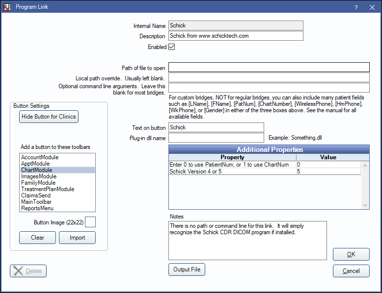

Schick CDR Dicom Bridge
In the Main Menu, click Setup, Program Links. Double-click on Schick from www.schicktech.com.
Schick is a digital imaging software. Website: www.schickbysirona.com.
To enable the bridge:
- Check the Enabled box.
- Double-click on a row in Additional Properties.
- Use the PatNum (enter 0) or ChartNum (enter 1) as the patient ID.
- Schick Version 4 or 5: Enter the version of Schick you are using. The default is version 5. Version 4 applies to any version prior to version 5.
- Set up a clickable bridge button.
- Under Add a button to these toolbars, highlight where to display the button.
- Enter the Text on button.
- (Optional) Import an image to show on the button (22 x 22 pixels).
- If using clinics, click Hide Button for Clinics. Select which clinics the button should display on.
- Click OK.
Technical Details
Open Dental passes the LN (last name), FN (first name), and PatNum/ChartNum to Schick.
Within Schick, make sure that it is set to use bridge mode.
Schick versions older than v3.5 will not reuse the exam window.
For Windows 10, the minimum requirement is CDR DICOM 5.
You may also use the Apteryx Data Grabber instead of our built-in bridge if you wish: https://apteryx.com/product/datagrabber/.